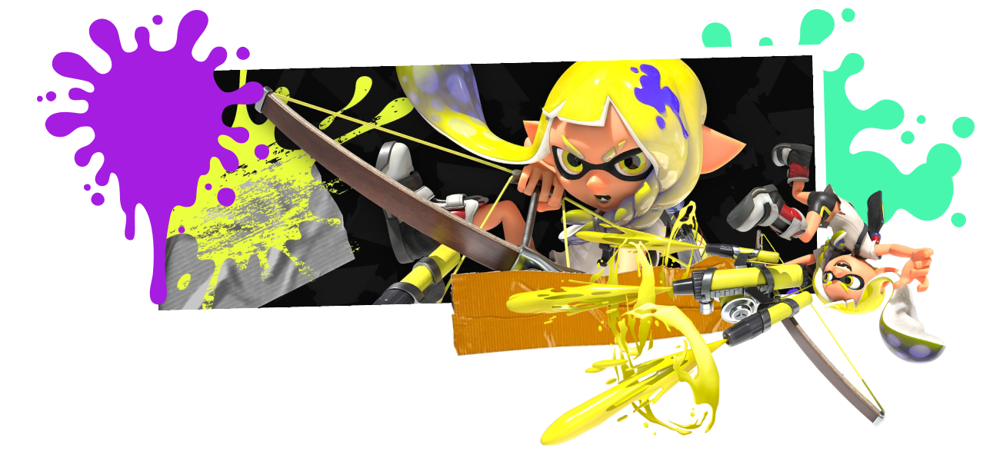

Armas
Rodillos y brochas
Potentes armas de corto alcanze que te permiten moverte rapidamente
por el terreno mientras entintan todo a su paso.
¡Ideal para abrir paso a tu equipo y para golpear a tus enemigos a brochazos!
Lanzatintas
Pequeñas armas parecidas a pistolas de agua cargadas de tinta
que realizan rápidos disparos.
La mayoría de armas dentro de esta categoría
disparan automaticamente mientras se
tenga pulsado el botón de disparo
aunque cuenta con varias excepciones semiautomáticas
Cargatintas
Armas de larga distancia que deben carga el disparo antes de atacar.
La clásica arma de sniper, con la peculiaridad de que los enemigos pueden ver
dónde estás apuntando. Requieren de mucha precisión para tener un impacto
positivo en el desarrollo de la partida
Derramatic
Armas con forma de cubo que arrojan tinta en grandes cantidades a una corta distancia
hacia delante. Perfectas para atacar sobre obstáculos o para controlar el terreno
desde un punto elevado. Algunas de las armas dentro de esta categoría modifican la forma
en la que lanzan la tinta, como puede ser lanzar tinta en tres direcciones o en forma de burbujas
Tintralladoras
Arma similar a una metralleta que debe ser cargada antes de poder disparar de forma continua
durante varios segundos. Tienen gran alcance y una alta cadencia de fuego lo que las hace perfecta
para controlar una zona del mapa desde una buena posición estratégica
Duales
Pistolas dobles pensadas para quien prefiere ayudar a su equipo acabando con los enemigos
que entintando el mapa. Estas armas otorgan a su portador la habilidad de realizar una pequeña esquiva
y le da un bonus de ataque unos segundos tras realizarla
Paratintas

Arma en forma de paraguas parecida a una escopeta que puede disparar tinta
a la vez que despliega un escudo. Depende del modelo del paratintas el escudo se desplegará
con cada disparo delante del jugador o se lanzará hacia delante recorriendo un camino recto
Arcromatizador
Una nueva arma introducida en Splatoon3 similar a un arco que dispara de forma parecida
al cargatintas, con la diferencia de que las balas lanzadas explotan unos instantes después
de tocar el suelo.
Tienen un disparo horizontal y otro vertical.
